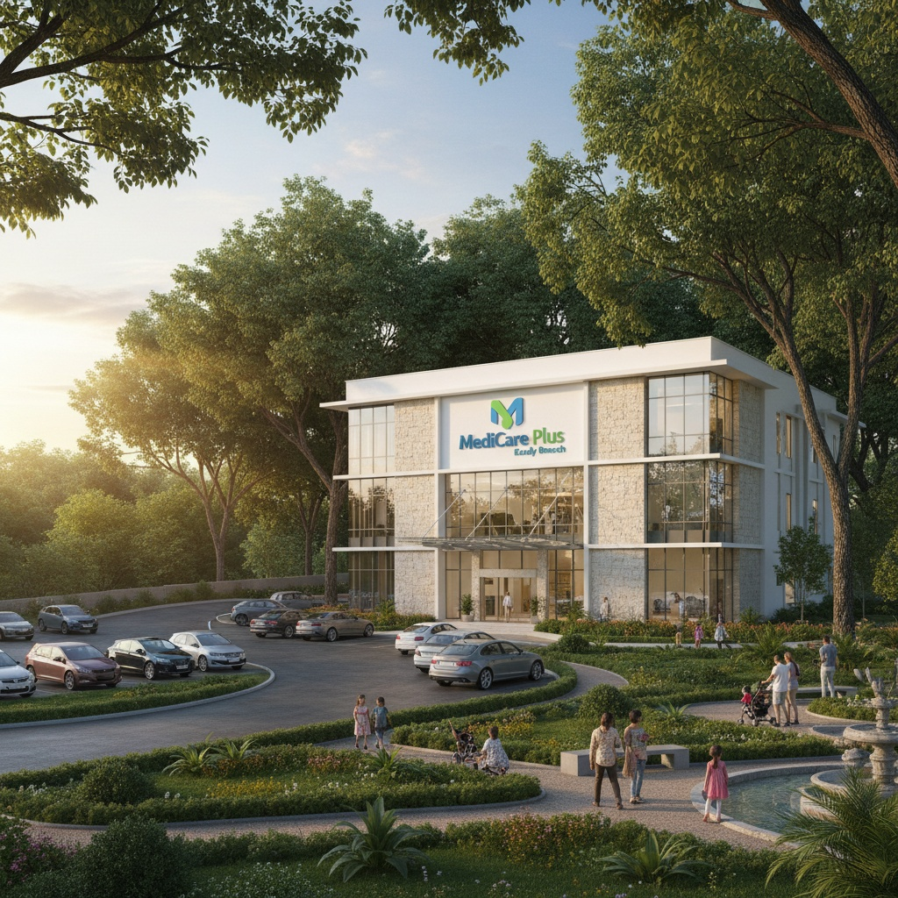
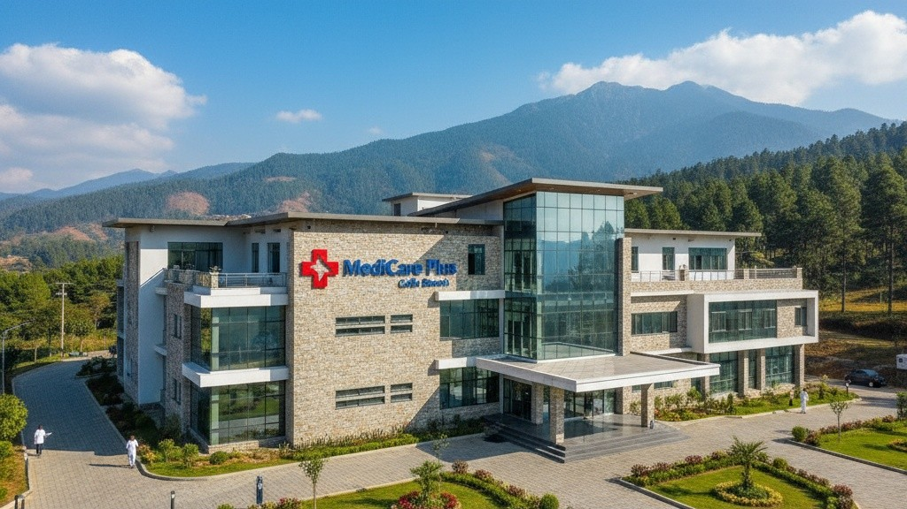

Address: No. 120, Galle Road, Colombo 03
Contact: +94 11 234 5678 | info.colombo@medicareplus.lk
Our flagship hospital with over 250 specialists, offering emergency care, advanced surgery, maternity, and diagnostics 24/7.

Address: No. 45, Peradeniya Road, Kandy
Contact: +94 81 225 8765 | kandy@medicareplus.lk
Located in the heart of the hill capital, providing general medicine, pediatrics, and surgical services for the central region.

Address: No. 09, Lighthouse Street, Galle
Contact: +94 91 223 0099 | galle@medicareplus.lk
Equipped with modern diagnostic labs and a 24-hour emergency unit, serving patients from the southern coastal belt.
Address: No. 78, KKS Road, Jaffna
Contact: +94 21 221 3322 | jaffna@medicareplus.lk
Focused on outpatient care, telemedicine, and community health services to improve accessibility in the northern region.
Hospitals
Diagnostic Centers
Clinics
Pincodes
Pharmacies